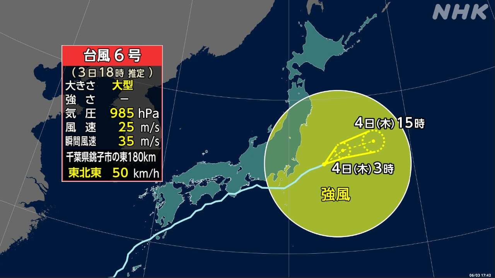
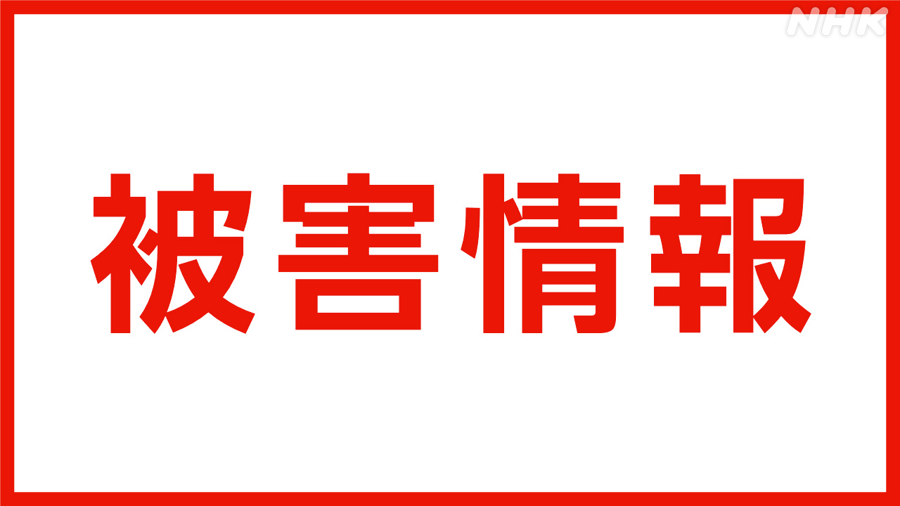

最新ニュース
1️⃣ 台風6号 関東地方や東北地方は雨と風にまだ気をつけて

台風6号は、日本のすぐ南の太平洋を東に進みました。いろいろな所で、風が強くなって雨がたくさん降りました。
和歌山県の古座川では3日の朝、川の水があふれた所がありました。このため、いちばん危険が高いことを伝えるレベル5の「特別警報」が出ました。
九州から関東地方では、2番目に危険なレベル4の「危険警報」が出た所がありました。川があふれそうになったり、山や崖が崩れそうになったりしたためです。
レベル5や4の警報は、夕方までになくなりました。
台風6号は、今は関東地方の東の海を進んでいます。気象庁は、関東地方や東北地方ではまだ雨と風に気をつけるように言っています。
2️⃣ 台風6号 けがをした人がいる

台風6号の強い風でけがをした人がいます。
関東地方では、神奈川県で80歳ぐらいの男性が転んで軽いけがをしました。
千葉県で30歳ぐらいの女性が2階のベランダから落ちてけがをしました。
神奈川県では「線状降水帯」ができて、同じところでたくさんの雨が降りました。川崎市で店などに水が入りました。
羽田空港などでは、800便以上の飛行機が飛ぶことができませんでした。電車も、運転を止めたところがありました。
3️⃣ 去年生まれた子どもは67万人 今まででいちばん少ない
生まれてくる子どもが、また少なくなりました。
厚生労働省によると、2025年に生まれた日本人の子どもは67万1000人ぐらいでした。
前の年より1万5000人ぐらい少なくなりました。100年以上前から調べていて、今まででいちばん少なくなりました。
国の研究所は、これぐらい少なくなるのは14年あとの2040年だろうと考えていました。
厚生労働省は「若い人の給料を多くしたり、仕事をしながら子どもを育てやすくしたりして、子どもが少なくなるのを止めたいです」と話しています。
4️⃣ サッカーワールドカップ 日本の選手がメキシコに着いた
サッカーのワールドカップが、今月から始まります。アメリカとカナダ、メキシコの3つの国で試合があります。
日本の選手たちは2日、練習をするメキシコに着きました。バスで空港からホテルに行きました。
ホテルで働く人たちは、バスが着く前から「日本！日本！」とみんなで声を出しました。日本人のファンもたくさん集まって、選手や監督が着くともっと大きい声を出しました。
18歳の女性は「選手たちはテレビで見るよりも輝いていました」と話しました。
選手たちはメキシコで準備したあとアメリカに行きます。日本の時間の今月15日、オランダと最初の試合をします。
- 〜ところ
- 〜がある / 〜がいる
- 〜ため
- 〜こと
- 〜から
- 〜たり〜たりする
- 〜になる
- 〜まで
- 〜までに
- 〜ている / 〜でいる
- 〜ように
- 〜くらい / 〜ぐらい
- 〜など
- 〜ことができる
- 〜以上
- 〜によると
- 〜より
- 〜から〜まで
- 〜後 / 〜あと
- 〜ながら
- 〜し、〜し
- 〜やすい
- 〜てみる
vebaev.github.io
Generated: 2026-06-03 14:42:21 UTC